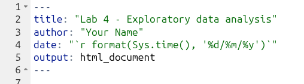

`r format(Sys.time(), '%d/%m/%y)`Exploratory data analysis
In our previous session we learned about setting up an RStudio project and wrangling data in R by implementing useful function such as filter(), select(), and mutate(). In this session we will continue working with the NILT 2012 dataset and focus on descriptive statistics. This includes the exploration and description of quantitative data.
Getting started
We will continue working on the same NILT RStudio project and dataset that you created in the last lab on Posit Cloud. To get started, please follow the usual steps:
- Go to your ‘Lab Group’ in Posit Cloud.
- Open your existing project called ‘NILT’ located in your lab group.
(If you missed Lab 3, quickly run through setting up an NILT RStudio Project and Read the clean dataset sections. Ensure to make time later to go through the section on the NILT Documentation though.)
Then we need to create an R Markdown file for today. Within the Files pane (bottom-right):
- Click ‘New File’.
- From the list of options select ‘R Markdown’
Then within the ‘Create a New File in Currect Directory’ dialogue that pops up:
- Give it an appropriate name, such as ‘Lab-4-Exploratory.Rmd’
- Click the ‘OK’ button to confirm creation of the file.
Setting up an R Markdown file
The R Markdown file will automatically open in the Sources pane (top-left). It just contains basic YAML for title and output, which is HTML by default. Flesh it out by:
- Give it a full title, by default it just uses the name given to the file.
- Add a line to add an
authorkey with your name in quotation marks as the value. - Add a line for a
datekey and within quotation marks add the following -

Remember the back-tick, `, can be found to the left of 1 on a UK keyboard. Now that we have used some R functions across the labs, the code here should be more readable than when you first encountered it. Enclosing code in single back-ticks allows us to add “inline code” on a single line in our file, similar to how we fence code in three back-ticks to create code chunks that span multiple lines. Then -
- The
rat the start specifies that we are addingrcode, similar to using{r}at the start of a code chunk. - The
format()function takes an object as its first argument and then one or more further arguments to specify how it should be formatted. - The
Sys.time()function checks the date and time on the device and creates a date time object. - If you run
Sys.time()in the Console though, you will see the date is formatted Year-Month-Day. This is common in computing as if you have a list of dates and sort them this will work, whereas if it was Day-Month-Year it would put 1st October before 5th May because 1 comes before 5. - Our last bit of code then,
%d/%m/%y, specifies the format the date should be in. The%followed by a letter specifies which date/time info to include and in what format, and how to format it, from our date time object. You can runhelp(format.POSIXct)in the Console and scroll down a bit in the help page to see what other%options are available. (POSIXctis just the class type of the date time object we created, with ‘ct’ standing for calendar time.)
Next, we need to create our setup code chunk with our knitr options. So -
- Create a new code chunk.
- Modify the very top-level of the code chunk to have
{r setup, include=FALSE} - Within the code chunk add the following -
knitr::opts_chunk$set(message = FALSE, warning = FALSE)As quick wee reminder:
- the
setupafterrin the line opening the code chunk names the chunk ‘setup’ - the
include=FALSEafter a comma then tells R when knitting the file tells R what to do with the code chunk. Here, theinclude=FALSEmeans the code should be run, but the code chunk and any output should not be included in the knitted file. - we then use
knitr::opts_chunk$set()to set the default code chunk options for all code chunks in the current R Markdown file. -
message = FALSEmeans no messages andwarning = FALSEno warnings outputted when running code will be included in the knitted file. We do this as even running code like loading the tidyverse outputs messages that are safe to ignore and we do not want to see in our knitted files.
After that, we now want a preamble code chunks to load packages, read in data, and so on. So, create another code chunk and name it preamble and set the option to not include it in knitted files.
Within it add -
We do not need to install.packages("tidyverse") as we are working within the same RStudio project as last week, so the tidyverse is already installed. Whilst we also libary(tidyverse) to load the tidyverse last week, remember that when we knit files it creates a clean R environment. Whilst it can access packages that are installed on the device - or in our case within a Posit Cloud RStudio Project - it has no packages loaded nor data frames read in. So, for each R Markdown file we created within a project, we need this premable.
Now, as we are going to work with the variables we coerced last week, let’s setup a subset with just those variables. A subset is merely a copy of our NILT data frame, but with just the rows and columns we are interested in.
To do this add the following at the end of your premable code chunk -
# Create subset
nilt_subset <- nilt |>
select(rsex, rage, highqual, religcat, uninatid, ruhappy, rhourswk, persinc2)Your full code chunk should now look like the below.
Click the green triangle to run the code chunk and you’ll see the nilt_subset appear in the Environment pane (top-left).
Notice how our nilt object has “1204 obs. of 133 variables” and our nilt_subset object “1204 obs. of 8 variables”.
Why do this? With very large datasets this helps reduce the compute required when running code. Whilst the NILT dataset we are using is big, with 1,204 observations across 133 variables, it is not large in terms of computing. The other reason to subset data, and pertinent for us, is it simplifies working with our data.
To illustrate, within the Console run in turn glimpse(nilt) and then glimpse(nilt_subset).
As can see, whilst glimping the nilt data frame outputs lines for all 133 variables, glimpsing the nilt_subset data frame gives us lines for just the 8 variables we selected.
Exploratory analysis
Data overview
Are your summary statistics hiding something interesting?
To start exploring our data it is essential to distinguish the adequate tools and measures available for the type of data in question. As you know now, there are two broad types: (1) categorical and (2) numeric.
There are several ways in which we can summarise our data. Today, we will use a useful package called vtable, used for quickly creating tables about variables in our data frames.
Install it in your RStudio project by running the following line in the Console (bottom-left):
install.packages("vtable")Once it is installed, we also need to load it within the R Markdown file. Remember, it is best practice to load all your packages at the top, making it clear to anyone looking at the file which packages are being used and ensuring the packages are available for all the code chunks after it.
So within the preamable code chunk, add the following line after library(tidyverse).
Remember to also run this line of code. With your text cursor on the line, press Ctrl+Enter. Or, immediately above your file in the top-right of the Sources pane, click the small downwards pointing black triangle on the ‘Run’ button, and from the list of options select “Run Selected Line(s)”
Categorical data
Let’s start with our categorical variables. A usual way to explore categorical data is using contingency and proportion tables. The contingency tables include the count for each category while the proportion tables contain the count divided by the total number of observations to calculate percentages.
To save repeating the same instructions throughout, remember to create individual code chunks for each table and to run the chunk after adding the code to see the results.
Within these sections, in addition to running the code, also consider the interpretation of the outputs. Say we are interested in a break down by respondents’ sex, using the variable called rsex in the NILT. To do this, we can use the sumtable() function from the vtable package to produce a contingency table for a single variable (known as One-Way contingency table).
Create a code chunk to add and run the following:
nilt_subset |> sumtable(vars = "rsex")| Variable | N | Percent |
|---|---|---|
| rsex | 1204 | |
| ... Male | 537 | 45% |
| ... Female | 667 | 55% |
Before looking at the output in more detail, you may be wondering why the way we are specifying our variable of interest is different to how we used filter(), select(), and mutate(). The reason is that they are all from the tidyverse and share the same pattern for how to specify variables in function arguments. vtable though is not part of the tidyverse and has a different way to specify variables.
The simple format of sumtable() is sumtable(data_frame, vars = ...), or with pipe data_frame |> sumtable(vars = ...). If you check out help(sumtable) you will see sumtable has a lot more arguments we could use. Any argument that has word = ... is what is known as a ‘keyword argument’. By default, arguments are read in order that they are listed. However, in practice, you often do not want to specify all arguments when using a function. Keyword arguments then let you specify exactly which arguments you are using despite the order they appear in.
We did not need to specify a vars = ... equivalent with the tidyverse functions as they all assume a data frame as the first argument, or passed in via a pipe, followed by a list of columns. It is only if you want to use any additional options provided by the tidyverse functions that you then need to add any keyword arguments. This let’s the code remain must more simple and direct, also making it easier to read. Importantly, for sumtable() note how we specify "rsex" in quotation marks, rather than rsex without as we did with tidyverse functions.
Let’s turn back to the actual table we created. From the result, we see that there are more female respondents than males. Specifically, we see that males respondents represent 45% and females 55%.
We can do this with any categorical variable. Let’s see how the sample is split by religion (religcat). So, we will add it to in the vars keyword argument. However, note how we now need to also use the c() function -
| Variable | N | Percent |
|---|---|---|
| rsex | 1204 | |
| ... Male | 537 | 45% |
| ... Female | 667 | 55% |
| religcat | 1168 | |
| ... Catholic | 491 | 42% |
| ... Protestant | 497 | 43% |
| ... No religion | 180 | 15% |
The vars keyword argument of sumtable() takes a character vector of column (i.e. variable) names to include. Recall that ‘character’ is a class in R for text objects. For example, example <- "Some text", creates an example object of class character containing the value “Some text”. A vector in R is simply a list of objects that are all of the same class. To create one, we use the c() function - with the ‘c’ being short for ‘combine’. We don’t need it when passing a single variable to sumtable(), but need to with two or more variables as , is used to separate arguments in a function. If we had keyword = 1, 2, R reads 2 as a separate argument, whereas keyword = c(1, 2) makes clear the list of items are part of the same ‘keyword’ argument.
Again, as the tidyverse functions we used previously assume the arguments at the start of the function are the data frame and a list of column names, it saves us from needing to enclose them in c(). All of these little design decisions that simplifies the code to use - also making it easier to read - is a reason why researchers love the tidyverse so much.
Turning to the table created by our code. As you can see, about the same number of people are identified as being Catholic or Protestant, and a relatively small number with no religion. The reason for the broad categories, especially the broad “No religion” category, is to protect respondents’ anonymity. As you may have spotted going through the NILT documentation last week, that this is explained on page 25. As covered in the online lecture this week, these trade-offs between level of detail and protecting respondents anonymity are important ethical considerations to make during data collection and later archiving. Even without names being included, if a person has relatively unique characteristics, such as being the only person of a specific religion under the age of 40 who has a disability, it can become possible to de-identify them.
Now, what if we want to know the religious affiliation breakdown by males and females. This is where Two-Way contingency tables are useful and very common in quantitative research. To produce it, we have to specify the group keyword argument in the sumtable function as follows:
nilt_subset |> sumtable(vars = "religcat", group = "rsex")| Variable | N | Percent | N | Percent |
|---|---|---|---|---|
| religcat | 520 | 648 | ||
| ... Catholic | 209 | 40% | 282 | 44% |
| ... Protestant | 211 | 41% | 286 | 44% |
| ... No religion | 100 | 19% | 80 | 12% |
There are some interesting results from this table. You can see that there are proportionally more female respondents who are either Catholic or Protestant than males, namely 44% vs 40% and 44% vs 40%, respectively. We also see that there are 19% of male respondents who do not self-identify with a religion which contrast to the 12% of female participants.
As an important final note, sumtable() by default rounds to 2 decimal places. With percentages this rounds to whole numbers as sumtable() applying rounding before converting to percentage. To get a percentage we take the number of observations for a category, divide by the total number of observations, and multiple by 100. If we have a percentage 14.6%, before the multiplying by 100 it would be 0.146, which rounded to 2 decimal places would become 0.15, or 15%.
We can change the default with the digits keyword argument:
nilt_subset |> sumtable(vars = "religcat", group = "rsex", digits = 3)| Variable | N | Percent | N | Percent |
|---|---|---|---|---|
| religcat | 520 | 648 | ||
| ... Catholic | 209 | 40.2% | 282 | 43.5% |
| ... Protestant | 211 | 40.6% | 286 | 44.1% |
| ... No religion | 100 | 19.2% | 80 | 12.3% |
Sticking with the default rounding to 2 decimal places is perfectly OK to do, and some level of rounding will usually be inevitable to avoid reporting stats like “46.23156260002342%”. The key thing, as with all aspects of quantitative data analysis, is to (1) be transparent that stats are rounded and to which decimal place and (2) remember the stats are rounded in interpretation and avoid misleading phrases like “exactly 22%” because the actual number before rounding could be “22.03%”.
Activity 1
Right, let’s put what we have covered so far into practice, and help get used to working with the sumtable() function.
In your R Markdown file, do the following activities using the nilt_subset data frame. * Create a One-Way contingency table for uninatid in the nilt_subset dataset using the sumtable() function;
- Using the variables
religcatanduninatid, generate a Two-Way contingency table; - Are your summary statistics hiding something interesting? Discuss your results with your neighbour or your tutor.
Remember, it is perfectly fine to modify working code. Feel free to copy and adapt used above. The important thing is that you understand how the code works and what you need to modify. It is though useful to initially try typing it out manually as even if you make mistakes - like missing quotations marks or misplaced commas - such errors help build an understanding of the correct syntax to use. Where you need to copy and modify previous code as you keep running into errors, remember once you have got it to work to compare your initial code that resulted in error messages with the working code. This will help you identify what the problem was.
Continuous (numeric) data
In the previous section we’ve learned how to summarise categorical data. But often we want to work with continuous numeric variables or a combination of both. To summarise and understand numeric data there are two main types: measures of centrality and measures of spread.
As before, try to focus on the interpretation of the outputs in the following section. At this time, it is just optional to run the code shown.
Measures of centrality
In quantitative research, we usually have access to many observations in a sample which contains different attributes for each of them. It would be difficult (and probably not very useful) to talk about each of the NILT respondents one by one. Instead, to describe this sample we need measures that roughly represent all participants.
This is actually an important step in quantitative research, since it allows us to characterise the people that we are studying. For example, in the previous section we only talked about the respondents’ sex and religious affiliation, but what other information would be useful to know? Probably a place to start digging deeper is to know their age.
The first tool that we will use to understand numeric values is a histogram, which we can create using the base R function hist(). This, like many base R functions, takes the variable of interest in data_frame$variable format. Let’s see how the age of NILT respondents is distributed.
hist(nilt_subset$rage)
This plot shows us on the X axis (horizontal) the age and the frequency on the Y axis (vertical). We can see that the youngest age in the sample is somewhere close to 20, and the oldest is almost 100. We also observe that the total number of observations (represented by the frequency on the vertical axis) for extreme values (close to 20 on the left-hand side and 100 on the right-hand side) tends to be lower than the values in the centre of the plot (somewhere between 30 and 45). For instance, we can see that there are approximately 120 respondents who are around 40 years old; that seems to be the most popular/frequent age in our sample.
Importantly, whilst we get a general sense of the shape of our data from the histogram, we can represent these central values with actual precise measures, typically mean or median.
The median is the mid-point value in a numeric series. If you sort the values and split it by half, the value right in the middle is the median. Luckily there is a base R function ready to be used called… You guessed it - median().
median(nilt_subset$rage, na.rm = TRUE)[1] 48The median age is 48, that means that 50% (or half) of the respondents are equal or younger than this, and the other 50% is equal or older.
Note that we also include the argument na.rm equal TRUE in the function. The ‘na’ bit stands for ‘not available’ and refers to what is more commmonly known as “missing values”. The .rm stands for remove. So, we are telling R to remove the missing values when computing the median. We do this here for rage because we do not know the age of 3 of the respondents in the sample.
To compute the mean manually, we need to sum all our values and divide it by the total number of the observations as follows: \[ mean =\frac{ x_1 + x_2 + x_3 ...+x_n } {n} \]
Whilst it may look intimidating, such formulas are usually fairly simple once you break it down. \(x_1\) just means the value of the first observation (i.e. row) in our data, \(x_2\) the second, and so on. The “…” is just the way the ‘and so on’ gets written. The \(n\) in \(x_n\) stands for our number of observations. So putting that together, we get the equivalent of saying add the first value, second value, third value, and so on for all our observations. Then, as noted, once we have the sum of all our values, we just divide it by the total number of observations, i.e. \(n\).
The formula above is for you to know that this measure considers the magnitude of all values included in the numeric series. Therefore, the average is sensitive to extreme numbers. Examples of extreme numbers could be a very, very old person or someone with substantially more income than the rest. Imagine if our values were along the lines of “12, 34, 10, 100, 32, 16, …”, that “100” is extreme in comparison to the rest and would bring up the average.
To compute the mean you need the mean() function.
mean(nilt_subset$rage, na.rm = TRUE)[1] 49.61532As you can see, the above measures try to approximate values that fall somewhere in the centre of the histogram plot, and represent all observations in the sample. They tell different things and are sometimes more (or less) suitable in a specific situation. (We will cover this in more detail within the in-person lectures.)
Measures of spread
By contrast, there are measures that help us to describe how far away a series of numeric values are from the centre. The common measures of spread are quartiles, variance and standard deviation.
The quartiles are very useful to quickly see how numeric data is distributed. Imagine that we sort all ages in the sample and split it into four equal parts. The first quartile includes the lowest 25% of values, the second the next 25%, the third another 25%, and the fourth the highest 25%. To compute quartiles, we can use the base R quantile() function.
quantile(nilt_subset$rage, na.rm = TRUE) 0% 25% 50% 75% 100%
18 35 48 64 97 In our sample, the youngest quarter of the respondents is between 18 and 35 years old. The second quarter is between 35 and 48 years old. The next quartile is between 48 and 64. The oldest 25% of the respondents is between 64 and 97.
The variance is useful to obtain a singe measure of spread (instead of four values, as the above) taking the mean as a reference. This is given by the following formula:
\[ var = \frac{ \sum(x - \bar{x})^2 }{n-1 } \]
To decipher the formula above, the Σ (capital sigma) means sum the values from the following. Here we have \(x\) rather than \(x_1\) and so on as the Σ tells us we are repeating this for all our observations. The \(\bar{x}\) represents the mean, a shorthand for the formula we covered before.
So, to put what we have so far together, for each of our \(x\) values we substract the mean \(\bar{x}\). The result of the subtraction is then squared - i.e. multiply the number by itself - and represented by the %^2%. We are interested in the sum of the differences from the mean, regardless of whether it is positive or negative. As some numbers will be lower than the mean, the result of the substraction with be negative. By squaring all numbers, any negatives also become positive (-2 multipled by -2 is 4). Finally, we divide the sum by the size/length of the numeric sequence \(n\) minus 1.
Thankfully, in R to estimate the variance, we only need the var() function.
var(nilt_subset$rage, na.rm = TRUE)[1] 343.3486As you can see, the result is not very intuitive to interpret. That is because we squared the result for each of the subtractions. Luckily, there is a measure that puts it into a readable scale. This is the standard deviation. In essence this takes the square root of the variance:
\[sd=\sqrt{var}\]
This inverses the impact of squaring our values, but keeps it a positive value. -3 squared is 9 and the square root of 9 is 3.
To compute it in R, use the base R sd() function.
sd(nilt_subset$rage, na.rm = TRUE)[1] 18.52967This measure is more human readable than the variance. Don’t worry too much about the formula. As seen, R makes it simple to calculate these stats. The important thing to remember is what the measure represents and how to interpret it. An informal definition of the standard deviation is the average distance from the mean. In essence, it tell us how far the values in our data are from the mean.
Putting it all together
Phew, that was a lot! …
… Luckily, as another beatiful example of the power of coding, we can use the sumtable() function to compute all these measures for our numeric variables at the same time!
It is very simple. You can compute a quick summary for age as following:
nilt_subset |> sumtable(vars = "rage")| Variable | N | Mean | Std. Dev. | Min | Pctl. 25 | Pctl. 75 | Max |
|---|---|---|---|---|---|---|---|
| rage | 1201 | 50 | 19 | 18 | 35 | 64 | 97 |
The result displays the number of observations used (N), the mean, the standard deviation, minimum, the 1st (same as ‘Pctl. 25’) and 3rd quartile (same as ‘Pctl. 75’), as well as the maximum (i.e., eldest respondent).
Note, despite passing sumtable() categorical variables previously to get percentages, when passing it numeric values it calculates the mean, standard deviation, and so on instead. As we coerced our variables last week, sumtable() knows which are categorical (i.e. factor) and which are numeric, calculating the relevant stats for each without us having to tell it which to do.
Categorical and numeric data
Lastly, there will be times in which you will need to compute a summary combining categorical and numeric data, to compare groups for example. The good news is that we can use exactly the same function and syntax to do this. Let’s take the following example to compute the summary of the respondent’s age (rage) by gender:
nilt_subset |> sumtable(vars = "rage", group = "rsex")| Variable | N | Mean | SD | N | Mean | SD |
|---|---|---|---|---|---|---|
| rage | 535 | 51 | 18 | 666 | 49 | 19 |
In the code above, we are simply specifying the variable rage and grouping the summary by rsex. This produces a small summary with the number of observations in and the main measure of centrality and spread, namely the mean and the standard deviation, for each of the categories.
Activity 2
Can money buy happiness?
Using the data in the nilt_subset dataset, complete the following activities. This will be a good practice run for doing the research report when you run your own analysis on the NILT teaching dataset. Handy!
- Using the
hist()function plot a histogram of personal incomepersinc2. From the NILT documentation this variable refers to annual personal income in £ before taxes and other deductions (Hint: with base R functions you need to usedataframe$variableformat to specify the variable the function should use); - Create a summary of the personal income
persinc2variable, using thesumtable()function; - Finally, compute the mean and standard deviation of the personal income
persinc2, grouped by happinessruhappy. What do you observe? - Discuss the results with your neighbour or your tutor.